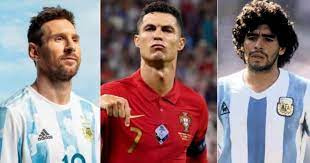

El futbol es un deporte que se practica entre dos equipos de once jugadores que tratan de introducir un balón en la portería del contrario impulsándolo con los pies, la cabeza o cualquier parte del cuerpo excepto las manos y los brazos; en cada equipo hay un portero, que puede tocar el balón con las manos, aunque solamente dentro del área; vence el equipo que logra más goles durante los 90 minutos que dura el encuentro.
Existen distintos tipos de torneos por equipos, cada uno con formatos distintos, ya sean en grupos, por tabla o por llaves, la liga con mas alto nivel se ha reconocido siempre por ser La Liga Santander (España) sin embargo en los ultimos años esto ha ido cambiando y ahora se reconoce la Premier League como la de mas alto nivel (Inglaterra), los torneos mas reconocidos por alto nivel son:
En el futbol existen 3 jugadores que han sido los grandes del futbol y no se puede
elegir a uno solo como el mejor sin embargo estos tres son:
Leonel Andres Messi Cuchitrini
Cristiano Ronaldo Dos Santos Abeiro
Diego Armando Maradona
